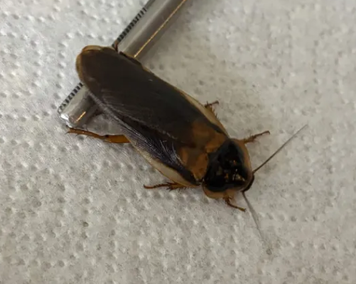
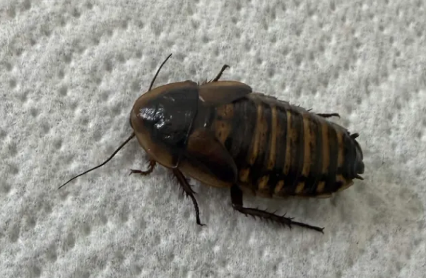
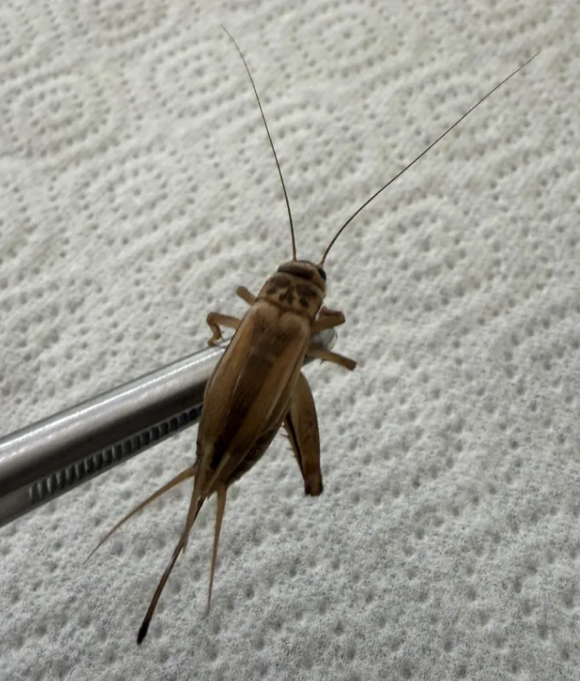
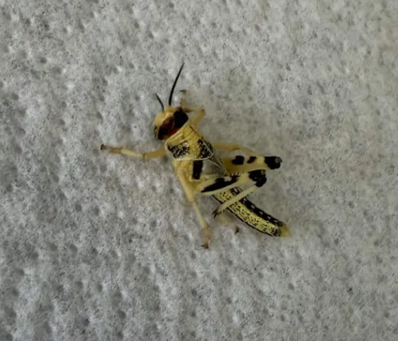
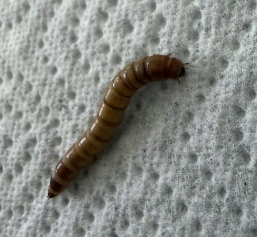

Die Ernährung meiner Wasseragame
Das männliche Dubia besitzt lange Flügel und ist deutlich schlanker als das Weibchen. Es wird ebenfalls als Futtertier verwendet, ist jedoch etwas aktiver. Dubia-Schaben sind sehr nährstoffreich und gehören zu den besten Futtertieren für Wasseragamen.

Das weibliche Dubia besitzt nur kurze Flügel und einen kräftigeren Körper. Es ist besonders nährstoffreich und eignet sich hervorragend als Futtertier für Wasseragamen. Dubia-Schaben sind leicht verdaulich und enthalten viele wichtige Proteine und Mineralstoffe.

Heimchen gehören zu den beliebtesten Futtertieren für Reptilien. Sie sind sehr aktiv, regen den Jagdtrieb der Wasseragame an und liefern wertvolle Proteine. Vor dem Verfüttern werden sie häufig mit Kalzium- und Vitaminpulver bestäubt.

Heuschrecken sind sehr gute Futtertieree für Wasseragame. Sie sind sehr proteinreich und regen durch ihre schnelle Bewegung den natürlichen Jagdtrieb an. Gleichzeitig enthalten sie wenig Fett und eignen sich deshalb gut als regelmässiges Futter. Vor dem Verfüttern werden sie häufig mit Kalzium- und Vitaminpulver bestäubt, damit die Wasseragame alle wichtigen Nährstoffe erhält.

Mehlwürmer sind gutes Ergänzungsfutter für Wasseragamen. Sie enthalten viele Proteine, aber auch einen höheren Fettanteil als andere Futtertiere. Deshalb sollten sie nur gelegentlich und in kleinen Mengen verfüttert werden. Als abwechslungsreiche Ergänzung zum Speiseplan sind sie jedoch gut geeignet und werden von Wasseragamen gerne gefressen.
